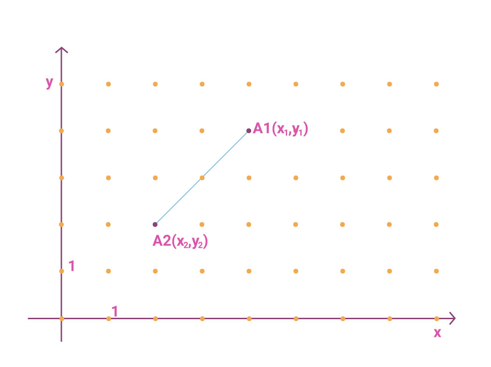
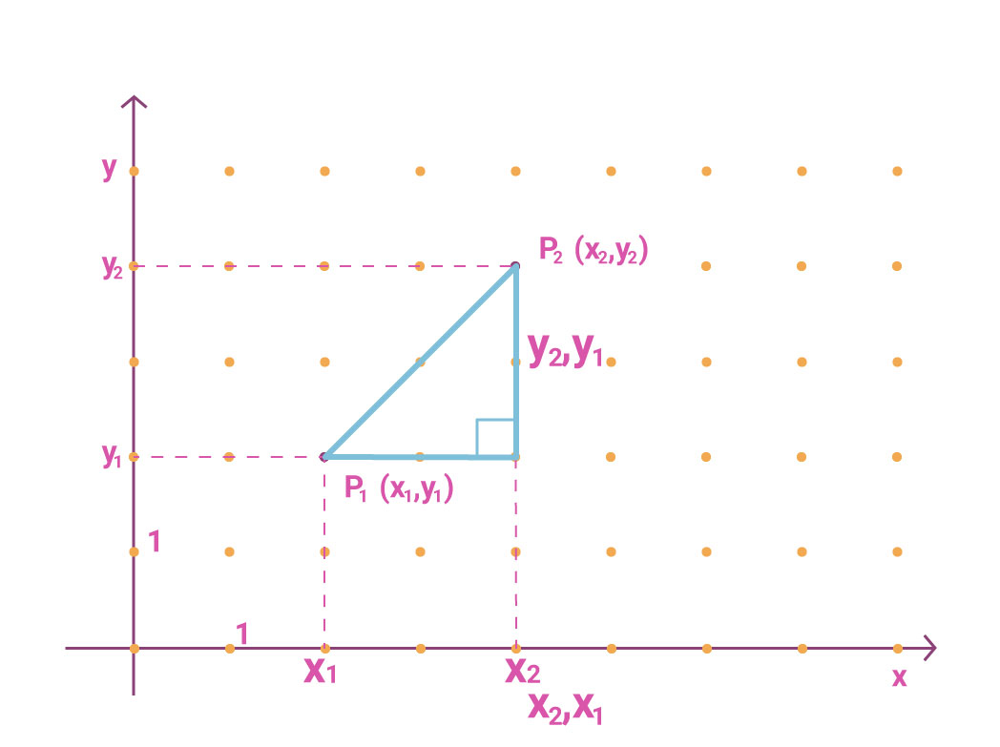

Introducción
De los conceptos más utilizados en Geometría analítica es el de segmento rectilíneo, con origen de la palabra: segmentum. De aquí se puede decir que es una parte de la recta que está delimitada por dos puntos conocidos como extremos, en donde uno de ellos es conocido como punto inicial y el otro punto final (se considera el punto inicial aquel que tenga la menor ordenada), siempre se le relaciona con la longitud de dicho segmento que es la distancia entre los dos puntos, formada por puntos. Un número infinito de ellos por ejemplo, entre los puntos A y B y se representa como$|AB|$ o dAB .
Tenemos tres formas de caracterizar el segmento de recta: por los extremos que forman, por su longitud y uno de los puntos que lo forma, y por último por un punto y el ángulo de inclinación o la pendiente que lo determina (o su prolongación) con el eje x.
La longitud de un segmento de recta es la distancia entre los puntos que lo determinan.
Distancia entre dos puntos
Dado un segmento de recta formado por A1 y A2

Para obtener una expresión que de manera general proporcione la distancia entre los puntos A1( x1 , y1 ) y A2(x2 , y2), formamos el triángulo rectángulo siguiente:

Distancia entre dos puntos
Uso del teorema de Pitágoras
Por el teorema de Pitágoras tenemos que:
c2 = a2 + b2
Donde:
c: hipotenusa
a y b: catetos
Sustituyendo los valores de a = x2 - x1; b = y2 - y1 y c = la distancia de A1 a A2.
Fórmula para calcular la distancia entre dos puntos en el plano cartesiano.
Condiciones que satisfacen la distancia entre dos puntos: